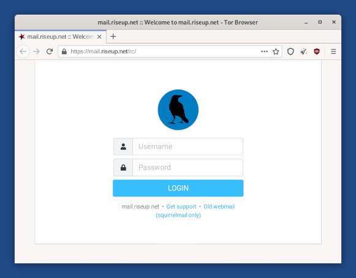
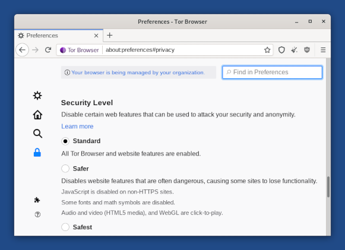
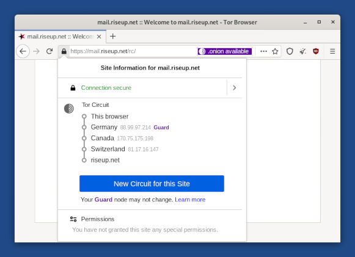

- Proxy server refusing connections
- AppArmor confinement, downloading, and uploading files
- Hiding that you are using Tor Browser
- HTTPS encryption with HTTPS Everywhere
- Protection against dangerous JavaScript
- Security level
- Tor circuit
- New Identity feature
- NoScript to have even more control over JavaScript
- Letterboxing
Tor Browser is a web browser based on Mozilla Firefox but configured to protect your privacy.
Sending your connections to websites through the Tor network is not enough to totally protect you while browsing the web:
- Cookies can be used to track and identify you across different websites.
- Security vulnerabilities in JavaScript have been used to deanonymize Tor Browser in the past.
This is why Tor Browser integrates all kinds of security protections inside the browser as well.
Some frequently asked questions about Tor Browser can be found in the FAQ.
Proxy server refusing connections
The following error message in Tor Browser means that Tails is not yet connected to the Tor network:
The proxy server is refusing connections
Make sure that you are:
AppArmor confinement, downloading, and uploading files
Tor Browser in Tails is confined with AppArmor to protect the system and your data from some types of attacks against Tor Browser. As a consequence, Tor Browser in Tails can only read and write to a limited number of folders.
This is why, for example, you might face Permission denied errors if you try to download files to the Home folder.
You can save files from Tor Browser to the Tor Browser folder that is located in the Home folder. The content of this folder will disappear once you shut down Tails.
If you want to upload files with Tor Browser, copy them to that folder first.
If you turned on the Personal Data feature of the Persistent Storage, you can also use the Persistent/Tor Browser folder to download and upload files from Tor Browser. The content of the Persistent/Tor Browser folder is saved across different working sessions.
To prevent Tails from running out of memory and crashing, download very big files to the Persistent/Tor Browser folder. All the files that you download outside of the Persistent Storage are stored in memory (RAM), which is more limited.
Hiding that you are using Tor Browser
It is impossible to hide to the websites that you visit that you are using Tor, because the list of exit nodes of the Tor network is public.
htw2-tails.png
That is why many more websites ask you to solve a CAPTCHA when using Tor Browser.
The anonymity provided by Tor Browser works by making all users look the same to make it impossible to know who is who among the millions of users of Tor Browser.
Tails tries to make it as difficult as possible for websites to distinguish Tails users from other users of Tor Browser. If it was possible for a website to determine whether you are a user of Tor Browser inside or outside of Tails, this would provide a little bit more information about you and reduce your anonymity.
The websites that you visit can retrieve a lot of information about your browser, whether it's Tor Browser or a regular browser. This information is called the fingerprint of the browser and includes the name and version of the browser, the size of the window, the time zone, the available fonts, etc.
To make it difficult to distinguish Tails users from other users of Tor Browser, Tor Browser in Tails tries to provide the same information as Tor Browser on other operating systems.
A difference is that Tails includes the uBlock Origin extension, which removes advertisements. If an attacker can determine that you are not downloading the advertisements that are included in a webpage, that could reveal that you are a Tails user.
To hide to someone monitoring your Internet connection that you are connecting to Tor, see our documentation about connecting to the Tor network.
HTTPS encryption with HTTPS Everywhere
Using HTTPS instead of HTTP encrypts your communications with the website and prevents the Tor exit node from intercepting your communications.
For example, here is how the browser looks when we try to log in to an email account at riseup.net, using their webmail interface:

Notice the padlock icon on the left of the address bar saying "mail.riseup.net". Notice also the address beginning with "https://" (instead of "http://"). These are the indicators that an encrypted connection using HTTPS is being used.
When you are sending or retrieving sensitive information (like passwords), you should try to only use services providing HTTPS. Otherwise, it is very easy for an eavesdropper to steal whatever information you are sending, or to modify the content of a page on its way to your browser.
HTTPS Everywhere is a Firefox extension included in Tor Browser. It is produced as a collaboration between The Tor Project and the Electronic Frontier Foundation. It encrypts your communications with a number of major websites. Many sites on the web offer some limited support for encryption over HTTPS, but make it difficult to use. For example, they might default to unencrypted HTTP, or fill encrypted pages with links that go back to the unencrypted site. The HTTPS Everywhere extension fixes these problems by rewriting all requests to these sites to HTTPS.
To learn more about HTTPS Everywhere, you can see:
Protection against dangerous JavaScript
Having all JavaScript disabled by default would disable a lot of harmless and possibly useful JavaScript, and might render many websites unusable.
That is why JavaScript is enabled by default but Tor Browser disables all potentially dangerous JavaScript. We consider this as a necessary compromise between security and usability.
To understand better the behavior of Tor Browser, for example, regarding JavaScript and cookies, you can refer to the Tor Browser design document.
Security level
You can change the security level of Tor Browser to disable browser features as a trade-off between security and usability. For example, you can set the security level to Safest to disable JavaScript completely.
The security level is set to Standard by default which gives the most usable experience.
To change the security level, click on the icon on the right of the address bar and choose Advanced Security Settings….

You can safely disregard the message, "Your browser is being managed by your organization," which appears in the Tor Browser preferences.
All this message means is that the automatic updates feature of Tor Browser has been disabled. This is done intentionally in Tails to make sure that no security feature or configuration gets broken by automatic updates of Tor Browser.
Tor circuit

Click on the padlock in the address bar to show the Tor circuit that is used to connect to the website in the current tab, its 3 relays, their countries, and IP addresses.
The last relay in the circuit, the one immediately above the destination website, is the exit relay. Its country might influence how the website behaves.
Click on the New Circuit for this Site button to use a different circuit.
You can use Onion Circuits to get more detailed information about the circuits being used.
New Identity feature
To switch to a new identity, choose
 ▸
.
▸
.
The New Identity feature of Tor Browser:
- Closes all open tabs.
- Clears the session state including cache, history, and cookies.
- Closes all existing web connections and creates new Tor circuits.
- Erases the content of the clipboard.
This feature is not enough to strongly separate contextual identities as the Tor circuits used ouside of Tor Browser are not changed.
Restart Tails instead.
For more details, see the design and implementation of the Tor Browser.
NoScript to have even more control over JavaScript
Tor Browser includes the NoScript extension to:
- Protect from more JavaScript attacks. For example, cross-site scripting (XSS) attacks.
- Allow you to disable JavaScript completely on some websites only.
For more information, you can refer to the NoScript website and features.
Letterboxing

The letterboxing feature of Tor Browser helps to prevent websites from identifying your browser based on the size of its window. Without letterboxing, websites could use the size of the browser window to track visitors or weaken your anonymity.
The letterboxing feature of Tor Browser works by adding gray margins to the browser window when the window is resized. The webpage remains as close as possible to the desired size without revealing the actual size of the window.